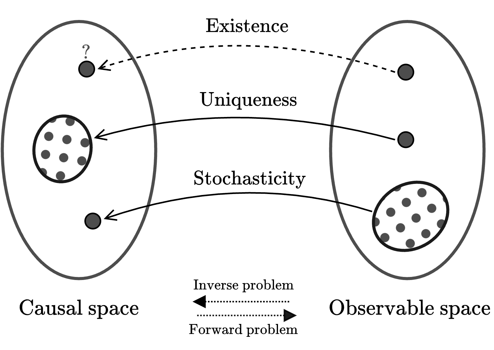
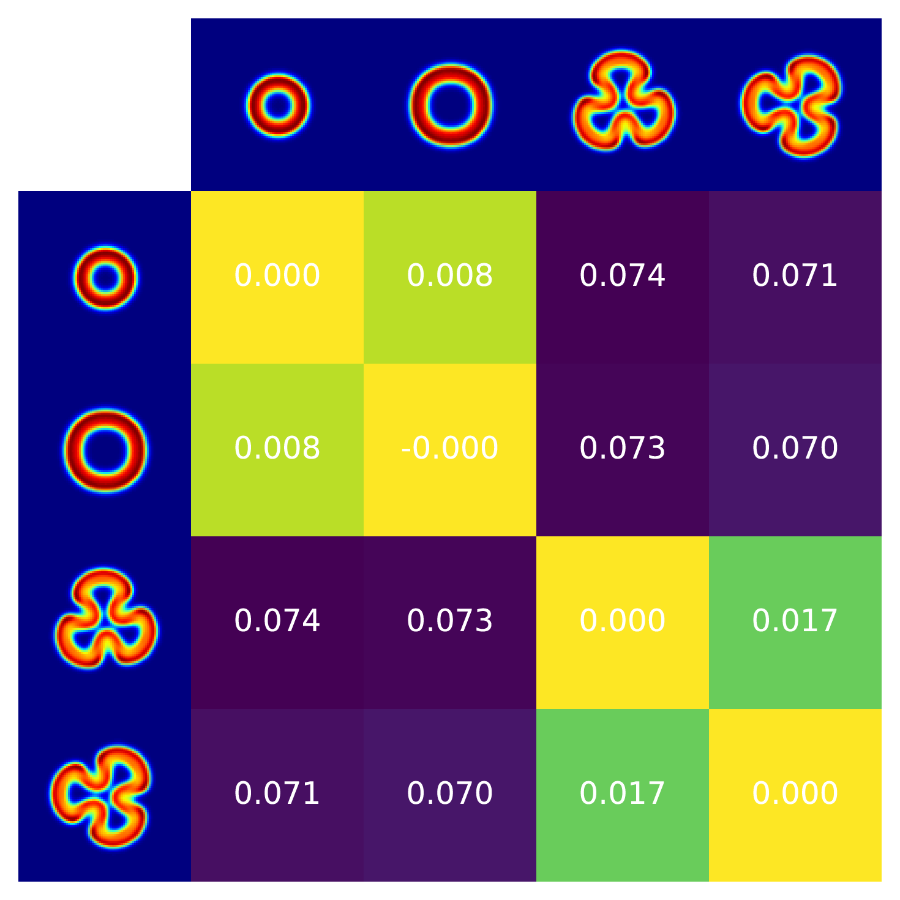
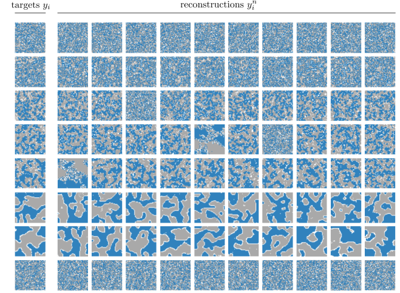

Complex systems—such as cellular automata (CA),
reaction-diffusion, or agent-based models (ABM)—self-organise into
dynamical patterns driven by simple rules. The conventional modelling
approach of complex systems consists in making an educated guess of the
local rules, simulating them– be it a partial differential equation, a
cellular automaton, or an agent-based model–and observing whether the
emergent patterns are compatible with the phenomena we seek to explain.
This modelling approach has proven highly successful in providing
mechanistic understanding of a variety of phenomena, including early
work on social segregation in urban environments, sociology, financial
markets dynamics , and ecology.
Inverse modelling formulates the problem in the reverse causal
direction:
“Given these macroscopic observations, what are the underlying
rules that produce them?”
An inverse model takes an observation as input and returns the model, or
initial configuration, that generates it.

Inverse modelling consists in finding the mapping from observations to their causal space (also
referred to as parameter space, solution space, or
domain space in the literature). It presents several
challenges: (i) solutions may not exist for all observations; (ii) the
problem of uniqueness—multiple causes may produce identical
observations; and (iii) observations may be stochastic, resulting in
different observed patterns for the same model parameters. Our method
seeks to address the challenge of stochasticity in the observable
space.
A major challenge in inverse problems is the presence of stochasticity
in the observations. Natural phenomena, notably those associated with
complex systems, exhibit sensitivity to initial conditions. That is, the
same model, under slightly different initial conditions, evolves towards
divergent patterns. Often, these patterns share high-level features but
do not match when compared pixel by pixel. They are stochastic instances
of the same class of patterns. For instance, while every human
fingerprint is unique, they all share characteristic features that make
them recognizable as fingerprints. Similarly, no two leopards have
identical spot motifs, yet all are immediately identifiable as leopard
patterns.
We introduce here a method that addresses the challenge of
solving inverse problems in systems with stochastic observable patterns.
The method operates by mapping target patterns onto an invariant
embedding representation, enabling the recovery of inverse parameters in
stochastic self-organising systems without the need for heuristics or
hand-crafted loss functions.
Self-organising systems
Self-organization, understood as the spontaneous emergence of global
order or coordination from local interactions, occurs in physical,
biological, and social systems. Examples include morphogenesis, animal
skin patterns, bird flocking, and social dynamics such as Schelling's
segregation model, where simple local rules give rise to large-scale
patterns.
These systems are highly sensitive to initial conditions, leading to
stochastic outcomes. For instance, the formation of fingerprints or skin
patterns varies between individuals due to small differences in early
conditions. This variability poses challenges for inverse modelling,
which requires a metric capable of recognising equivalence across
different realisations of the same underlying process.
Inverse problems
Solving an inverse problem consists in determining the unknown
parameters, or initial conditions, of a system from observations of its
outcomes. Contrarily, forward problems unambiguously map inputs
to outputs using the system model. Formally, solving an inverse problem
requires finding $(\theta, s_0) \in \Theta \times S$ such that
$F(\theta, s_0) = y_{\text{obs}}$, where $F: \Theta \times S \to Y$
denotes the forward model mapping parameters $\theta \in \Theta$ and
initial states $s_0 \in S$ to observed data $y_{\text{obs}} \in Y$.
Inverse problems are typically ill-posed, characterised by solution
non-uniqueness and sensitivity. These properties link inverse problems
to complex systems: small changes in their parameters or initial state
can result in divergent outcomes. As such, recovering the causal
parameters—i.e., solving the inverse problem—shares similar challenges
to ill-posed inverse problems.
Stochasticity in self-organising systems.Top: Reaction-diffusion model, where stochasticity arises
from varying initial conditions.
Bottom: Schelling's model, where stochasticity is embedded in
the model $F$ via asynchronous updates. Both how the a single model can result in stochasticity
in the observable space.
Stochasticity can be present in inverse problems in two distinct ways.
Stochasticity in the causal space: multiple parameters or initial
conditions $(\theta, s_0) \in \Theta \times S$ map to identical or
nearly identical observations $y_{\text{obs}} \in Y$, resulting in
degenerate solutions and non-uniqueness, i.e., non-injectivity of $F$.
In this case, the unknown quantities in the causal space are
distributions. An example is seismic tomography, which uses seismic
waves recorded at the surface to reconstruct the Earth's interior.
Solutions are non-unique: similar surface measurements can originate
from different inner structures.
Stochasticity in the observable space: in this case, observations
are inherently stochastic. Either resulting from randomness in initial
states, such as in reaction-diffusion systems ($y_{\text{obs}} =
F(\theta, s_0)$ with $s_0 \sim \mathcal{S}$), or from intrinsic
stochasticity in the forward model $F$, as in the asynchronous updates
of an agent-based model.
The existing literature on
inverse stochastic modelling exclusively focusses on the first
case: how to address stochasticity in the causal space, where similar
observations can have different causal origins. On the contrary, the
method proposed in this work addresses the challenge of stochasticity in
the observable space.
Embedding representations
Visual embeddings are vector representations that capture high-level
image features such as shape, structure, and texture, going beyond
raw pixel values. They embed similar images close together in a
lower-dimensional space, providing a natural way to compare pattern
similarity.
These embeddings are often invariant under transformations, making
them suitable for comparing patterns with stochastic variations.
This work uses the visual encoder of CLIP, a contrastively trained
model that outputs 512-dimensional embeddings without requiring
task-specific fine-tuning. This makes it effective for capturing
visual similarity between generated and target patterns, as illustrated in the figure to the right.

Examples of distance in embedding space between different patterns. Each of the patterns is an unique
instantiation from two different classes. The embedding model maps patterns of the same class (with
similar visual features) to similar embedding representations. Displayed values are
pairwise cosine distances $1 - \cos(z_i, z_j)$
Building invariant representations. Parameters $\theta$ in the causal space generate
patterns $y$ in the observable space. Those patterns are mapped by the
visual embedding onto vectors $z$ in the embedding space. Similar
patterns in the observable space are mapped to nearby points in the
embedding space.
Using Invariant Representations to Solve Inverse Problems in Stochastic System
A common approach to solving inverse problems is to formulate them as
optimisation problems by defining a loss function that measures the
discrepancy between target data and predictions. However, pixel-based
metrics are unable to meaningfully capture feature similarities between
stochastic patterns, since they cannot account for the intrinsic
variations often present in self-organising patterns. To solve inverse
problems with stochasticity in the observable space, a metric capable of
capturing the feature-level similarities rather than exact pixel-level
matches is needed. Embedding representations offer an effective solution
to this challenge by encoding features and invariances of the patterns.
The idea behind our method is straightforward: map stochastic
patterns onto an embedding space where perceptually similar patterns
have similar vector representations. Then, use these invariant
representations to solve the inverse problem of finding the unknown
parameters that generate the stochastic patterns we seek to reconstruct.
In the case of CLIP, the loss
metric is cosine similarity. By focusing on high-level visual
similarities rather than pixel-level matches, the method is robust to
stochastic variations, and is able to solve inverse problems across
entire families of patterns with shared visual features—without
requiring handcrafted loss functions.
The method operates by mapping stochastic patterns
onto an embedding space where perceptually similar patterns have
similar vector representations. A black-box optimiser then iteratively
searches for parameters that generate patterns with similar embeddings
to the target pattern. By comparing patterns in this embedding space
rather than pixel-wise, the optimiser can efficiently find parameters
that produce visually similar patterns to the target, even when the
underlying dynamics are stochastic.
Reaction-Diffusion System
Let's first apply the method to Gray-Scott, a reaction-diffusion model used to study pattern formation
in developmental systems. It describes how spatially distributed
concentrations of two interacting substances—or morphogens—evolve over
time. Morphogens play a critical role in developmental biology by
guiding cell differentiation and tissue patterning through their
concentration gradients. $u$ represents a nutrient or precursor
substance, while $v$ acts as an autocatalyst that promotes its own
production while consuming $u$. The interaction between $u$ and $v$,
combined with their ability to diffuse through space, leads to the
emergence of complex patterns such as spots, stripes, or labyrinths.
Through this interplay, the Gray-Scott model provides insights into how
local reactions and diffusion contribute to the self-organisation of
biological structures. The model is formalised as two partial
differential equations:
$D_u$ and $D_v$ are the diffusion rates for $u$ and $v$.
$f$ is the feed rate of $u$.
$k$ is the kill rate of $v$.
$\nabla^2$ is the Laplacian representing diffusion.
Presets $y_i$
Model Parameters
1.0
0.5
0.055
0.062
Padding Mode
Initial State
Try different initial conditions and parameters to explore the
variety of possible patterns.
We apply our method to find the unknown parameters of the Gray-Scott
reaction-diffusion model from different target patterns. The method
successfully recovers parameters that generate patterns matching the
targets, despite the stochastic nature of the system arising from random
initial conditions. Each row in the figure below shows a different target
pattern (leftmost column) followed by ten independent reconstructions
using our method. The consistency of the reconstructions across
different runs demonstrates the robustness of the method to
stochasticity in the observable space.
The results show that our method can effectively handle a wide range of
pattern types, from spots and stripes to more complex labyrinthine
structures. This versatility is particularly important in the context of
reaction-diffusion systems, where small changes in parameters can lead
to qualitatively different patterns. The method's ability to
consistently recover parameters that generate visually similar patterns,
regardless of the specific initial conditions, suggests that it has
successfully learned to focus on the essential features that
characterize each pattern family.
Results for Gray-Scott model. Twelve target patterns
(left column), each produced by simulating Gray-Scott model for
different parameters $\theta_i$ and random initial states $s_{0i}$.
The reconstructions columns show the patterns $y_i^n$ recovered by our
method for 10 independent training runs.
Schelling's Model of Segregation
The second system we use to demonstrate the method is Schelling's
segregation model, a classic computational model used to study the
emergence of spatial patterns in social systems. It illustrates how
individual preferences for neighbourhood composition can lead to
large-scale segregation, even with mild preferences. This model has been
highly influential in computational social science, specifically
contributing to the understanding of residential segregation and its
implications for urban planning and social dynamics. Schelling's model
has a historical significance in computational social science, as it was
one of the first to demonstrate how simple local rules can produce
complex emergent behaviours, showing the potential of agent-based models
to investigate social systems. It is for this latter reason that we
chose to demonstrate our method with it.
Our implementation consists of two classes of agents, distributed on a
spatial grid. Each agent evaluates its satisfaction based on the
proportion of similar neighbours in its local neighbourhood. Unsatisfied
agents with their current location will asynchronously relocate to a
random location to improve their satisfaction. Schelling's model leads
to the emergence of complex segregation patterns that match those
observed in urban environments.
$N_{\text{similar}}$ is the number of similar neighbours.
$N_{\text{total}}$ is the total number of neighbours.
$T$ is the agent's tolerance threshold, $T \in [0,1]$.
Presets $y_i$
Model Parameters
0.7
0.9
Adjust the similarity threshold to see how individual preferences
affect overall segregation patterns.
In this experiment, we applied the described method to find the
tolerance $T$ from different Schelling segregation patterns. We use a
grid size of 100 by 100, and an occupation density of 90%. The results
of the experiment are shown in the figure below.

Results for Schelling's segregation model. Eight
target patterns (left column), each produced by simulating Schelling's
model for different parameters $\theta$ and random initial states
$s_{0i}$. The reconstructions columns show the patterns $y_i^n$
recovered by our method for 10 independent training runs.
Conclusion
We have presented here a method for solving inverse problems in
stochastic self-organising systems by leveraging invariant visual
representations from embedding models—without the need to handcraft
metric functions to capture the visual similarities between patterns.
The key idea is to shift the optimisation from pixel space to an
embedding space where perceptually similar patterns are mapped to nearby
points, allowing the recovery of unknown parameters, even those
resulting in stochastic patterns. Unlike existing techniques in inverse
modelling, the method addresses the issue of stochasticity in the
observable space, rather than in the causal space. The method provides a simple yet effective technique for
theorists and experimentalists to investigate and control
self-organising stochastic systems.
Citation
@article{Najarro2025Jun,
title = {{Solving Inverse Problems in Stochastic Self-Organising Systems through Invariant Representations}},
author = {Najarro, Elias and Bessone, Nicolas and Risi, Sebastian},
journal = {arXiv},
year = {2025},
month = jun,
eprint = {2506.11796},
doi = {10.48550/arXiv.2506.11796}
}